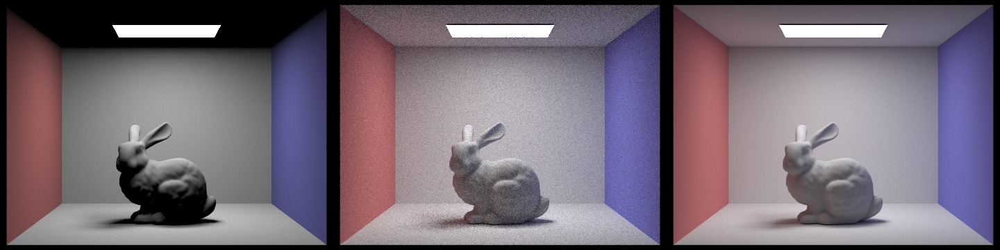
For each pixel, the renderer draws ns_aa uniformly distributed samples inside the pixel using gridSampler. It adds each sample's offset to the pixel's bottom-left corner, then divides by the image width and height to obtain normalized image coordinates. Sampling multiple positions and averaging their colors estimates the pixel's radiance and smooths object boundaries.
Camera::generate_ray maps each normalized coordinate (x, y) onto the camera's sensor plane at z = −1. The sensor point is ((2x − 1) tan(hFov/2), (2y − 1) tan(vFov/2), −1), with the field-of-view angles converted from degrees to radians. The ray starts at the camera's world-space position. Its direction is the sensor vector rotated by c2w and normalized. The near and far clipping distances initialize min_t and max_t.
Each camera ray is passed to est_radiance_global_illumination, which asks the scene's intersection structure for the closest primitive hit. At this stage, the starter structure stores the primitives in a single leaf and checks them directly. Triangle and sphere intersection routines accept only nonnegative distances within the ray's valid interval. On a hit, they shorten max_t to the hit distance, so later tests cannot replace it with a farther surface. They also record the distance, surface normal, primitive, and material in an Intersection. The boolean has_intersection routines share this logic but omit the intersection record.
For spheres, substituting the ray o + td into the sphere equation produces a quadratic. A negative discriminant means the ray misses; otherwise, the roots give the entry and exit distances. The implementation sorts these roots and selects the nearest valid one, trying the exit when the entry is behind the ray origin or before min_t. This also handles rays starting inside a sphere. The normal is the normalized vector from the sphere center to the hit point.
For Part 1, the hit normal is visualized as RGB using 0.5 * n + 0.5, mapping its components from [−1, 1] to [0, 1]. Misses return black in these scenes. Finally, raytrace_pixel averages the sample colors and writes the result to sampleBuffer. These colors show surface orientation rather than material color or physically based illumination.
The implementation uses the Möller–Trumbore algorithm. A point on the triangle can be written as p1 + u(p2 − p1) + v(p3 − p1). Setting this equal to the ray o + td gives three unknowns: the distance t and two barycentric coordinates u and v. Cross products and dot products solve this system without explicitly building or inverting a matrix.
First, the algorithm forms the two edges e1 = p2 − p1 and e2 = p3 − p1, then computes p = d × e2 and det = e1 · p. If det is zero, the ray is parallel to the triangle plane or the triangle is degenerate, so the test returns false. Either sign of a nonzero determinant is accepted, allowing hits from both sides.
Next, with s = o − p1 and q = s × e1, the algorithm computes u = (s · p)/det and v = (d · q)/det. A hit lies inside or on the triangle only when u ≥ 0, v ≥ 0, and u + v ≤ 1. Otherwise, the ray crosses the plane outside the triangle and is rejected. The remaining expression t = (e2 · q)/det gives the ray distance, which must satisfy the valid-interval checks.
For an accepted hit, the barycentric weights are (1 − u − v), u, and v. The shading normal is the normalized weighted sum of the three vertex normals. Interpolating these normals allows smooth shading across a mesh, while updating max_t ensures that the visible surface is the closest accepted hit.
All three images below were generated directly by the renderer using -f, at 800 × 600 pixels with 16 samples per pixel and 8 threads. Click an image to view the full-resolution PNG.
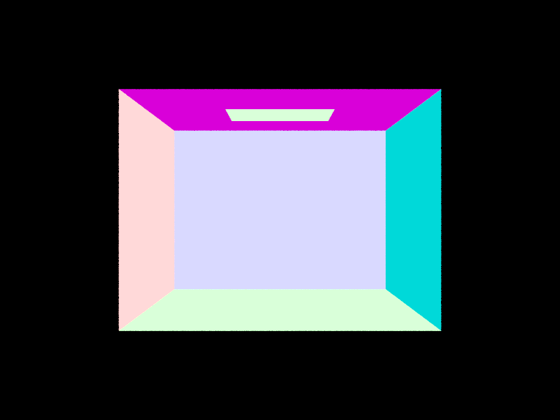
CBempty.dae: Each planar wall has a constant normal and therefore a uniform color. The distinct wall colors make triangle orientation and camera framing easy to inspect.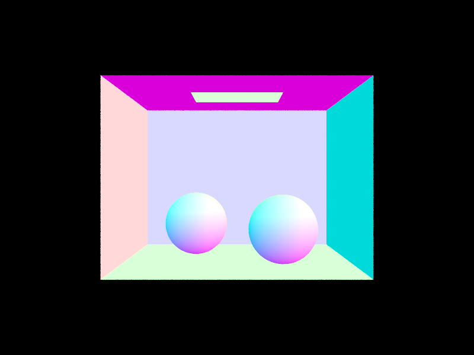
CBspheres_lambertian.dae: The spheres show smoothly changing colors as their analytic normals vary across their surfaces, alongside the constant colors of the surrounding triangle walls.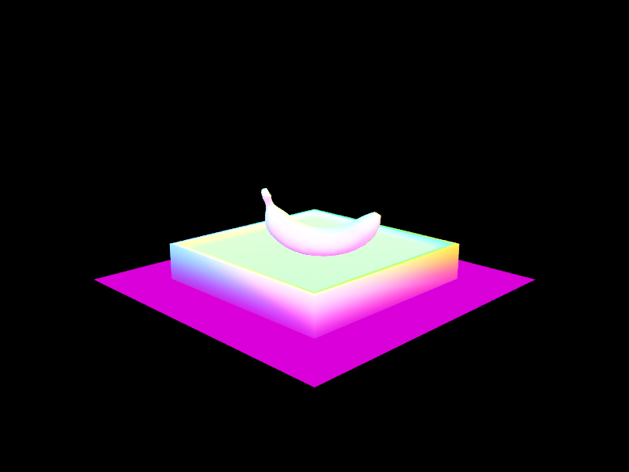
banana.dae: A curved triangle mesh provides another check of triangle intersection and interpolated vertex normals.Commands run from the renderer repository root after building (the resulting PNGs were copied into this write-up’s assets folder):
./build/pathtracer -t 8 -s 16 -r 800 600 -f docs/images/part1-empty.png dae/sky/CBempty.dae ./build/pathtracer -t 8 -s 16 -r 800 600 -f docs/images/part1-spheres.png dae/sky/CBspheres_lambertian.dae ./build/pathtracer -t 8 -s 16 -r 800 600 -f docs/images/part1-banana.png dae/keenan/banana.dae
The BVH groups scene primitives into a binary tree of axis-aligned bounding boxes. Construction starts with the full primitive range. For each recursive call, the implementation expands one box to enclose all primitive bounds and another to enclose their centroids. The first box becomes the node's bounding box. If the range contains at most four primitives, the node becomes a leaf and stores the range's begin and end iterators.
For a larger range, the implementation chooses the axis with the greatest extent in the centroid bounding box. This selects the direction in which the primitive centers are most spread out. It then uses std::nth_element to partition the primitives at the median centroid along that axis. The left child receives the first half of the range and the right child receives the remainder, and both are constructed recursively. This is a median split by primitive count, rather than a split at the geometric midpoint of the box.
The median keeps the child counts nearly equal and avoids an empty partition, even when all centroids coincide. Each recursive call therefore handles a smaller range and eventually reaches a leaf. Using nth_element also avoids fully sorting each range. The tradeoff is that balancing primitive counts does not directly minimize overlap or traversal cost: two child boxes can still overlap, so a ray may need to visit both. A surface-area heuristic could make different choices, but this implementation uses the simpler median rule.
The bounding-box test uses the slab method. For each coordinate axis, it computes the ray's entry and exit distances between the two box planes, swaps them when necessary, and intersects that interval with the intervals from the other axes. Traversal initializes this interval with the ray's min_t and max_t. If the overlap becomes empty, the whole node can be skipped. A ray parallel to a slab is rejected only when its origin lies outside that slab; a ray starting inside the box is still accepted.
At a leaf, traversal tests the contained primitives. has_intersection returns immediately after any hit. The closest-hit version visits both children, because a hit in the first child is not necessarily the nearest. Primitive intersections shorten ray.max_t, allowing the second child's box or primitives to be rejected when they lie farther away. The implementation visits the left child before the right; it does not sort child visits by entry distance.
These images were saved directly with the renderer's -f option at 800 × 600, with 16 samples per pixel and 8 threads. They visualize normals, using the same shading as Part 1. BVH acceleration makes these detailed scenes practical to render; it changes the amount of intersection work, not the intended shading. Click an image for its full-resolution PNG.
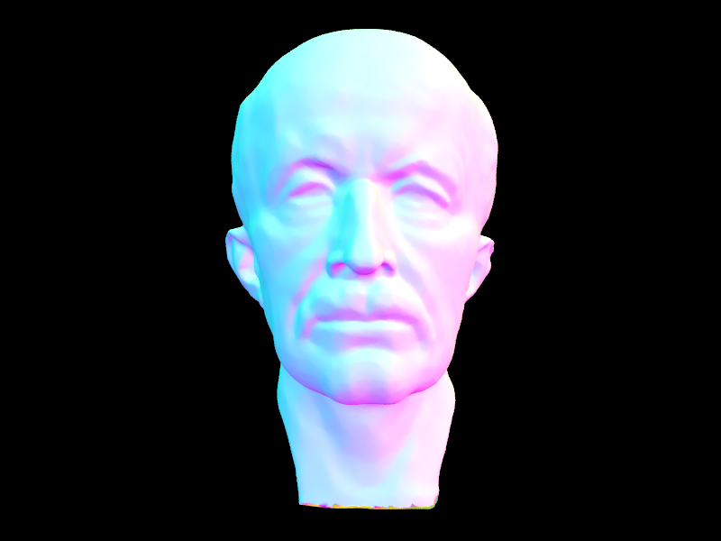
dae/meshedit/maxplanck.dae (50,801 mesh triangles). The detailed face and neck exercise traversal over a dense mesh with smoothly varying normals.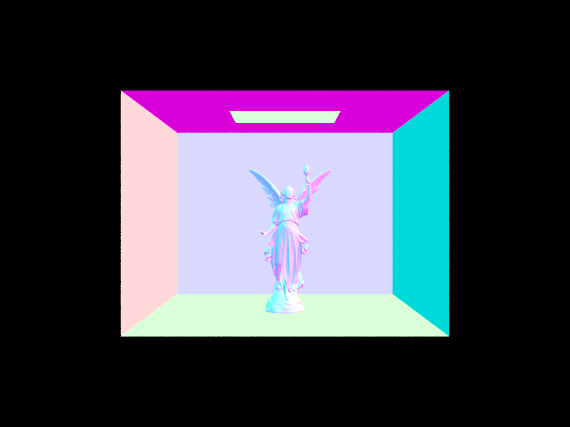
dae/sky/CBlucy.dae (133,796 mesh triangles). The detailed statue is enclosed by the Cornell box; the walls have constant normal colors while the statue varies across its curved surfaces.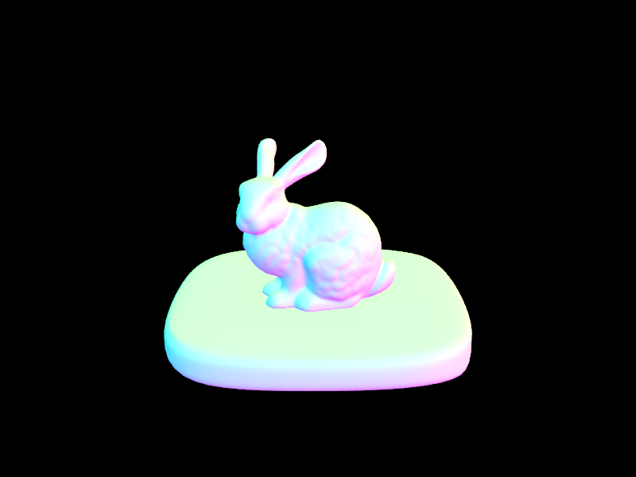
dae/sky/bunny.dae (33,696 mesh triangles). The bunny provides another curved mesh with fine geometry around the ears and silhouette.Render commands, run from the renderer repository root; the resulting PNGs are copied into this write-up's assets directory:
./build/pathtracer -t 8 -s 16 -r 800 600 -f part2-maxplanck.png dae/meshedit/maxplanck.dae ./build/pathtracer -t 8 -s 16 -r 800 600 -f part2-lucy.png dae/sky/CBlucy.dae ./build/pathtracer -t 8 -s 16 -r 800 600 -f part2-bunny.png dae/sky/bunny.dae
The benchmark used the same local machine, 320 × 240 resolution, one sample per pixel, one thread, default camera settings, and normal shading for both versions. Each scene was rendered three times per version; the table reports the median of the renderer's reported rendering duration in seconds, excluding scene loading and BVH construction. The lower resolution keeps the unaccelerated tests quick, and one thread removes parallel scheduling as a variable. Independent runs draw new random pixel samples.
For the unaccelerated baseline, a separate executable was built from a temporary copy of bvh.cpp, passing the total primitive count as the maximum leaf size. This puts every primitive in one root leaf and performs a linear primitive scan for rays entering that root box. The root-box rejection remains enabled in both versions; only hierarchical subdivision is disabled. The accelerated version uses the original four-primitive leaf limit. The project's source files were not changed for this experiment.
| Scene | Triangles | Without hierarchy (s) | With BVH (s) | Speedup |
|---|---|---|---|---|
| cow.dae | 5,856 | 0.8376 | 0.0231 | 36.3× |
| beetle.dae | 7,558 | 1.0649 | 0.0283 | 37.6× |
| teapot.dae | 2,464 | 0.3568 | 0.0211 | 16.9× |
BVH acceleration reduced the median rendering time from 0.8376 s to 0.0231 s for the cow (36.3×), from 1.0649 s to 0.0283 s for the beetle (37.6×), and from 0.3568 s to 0.0211 s for the teapot (16.9×). Without the hierarchy, every ray that enters the root box checks all primitives, so the larger meshes require substantially more work. With the BVH, a missed child box eliminates an entire group of primitives, leaving only a small subset for exact intersection tests. The smaller teapot benefits less because its linear scan is already cheaper and box traversal adds overhead. The results show a substantial improvement for these scenes, although speedup also depends on geometry, box overlap, and camera position; balanced tree depth alone does not guarantee logarithmic work for every ray. These are short local measurements, so the ratios describe this experiment rather than a universal performance guarantee.
Raw timing measurements (three trials per scene and version)
At the camera ray's first intersection, the implementation builds a local coordinate frame whose positive z-axis is the surface normal. It transforms the outgoing direction toward the camera into this frame, so the BSDF and cosine factor can be evaluated consistently. The direct-lighting integral is estimated by averaging samples of f(wo, wi) Li(wi) cos(θ) / p(wi). For a diffuse surface, the implemented BSDF is reflectance / π.
estimate_direct_lighting_hemisphere draws directions uniformly over the upper hemisphere, with probability density 1/(2π). The number of samples is the number of scene lights multiplied by ns_area_light. Each sampled local direction is rotated into world space and traced from the hit point with min_t = EPS_F to avoid intersecting the originating surface. If the ray hits geometry, the estimator uses the first hit's emitted radiance. A ray hitting a nonemissive object, or missing the scene, contributes zero. Each contribution is multiplied by the diffuse BSDF and local wi.z, divided by the sampling density, and averaged over all samples, including the zero contributions.
estimate_direct_lighting_importance samples each light directly with sample_L, which returns incoming radiance, a world-space direction, the distance to the light, and the sampling PDF. Area lights receive ns_area_light samples; delta lights receive one sample. The incoming direction is transformed into the local frame, and samples below the surface or with invalid PDFs or distances are rejected.
For a valid sample, a shadow ray checks visibility between the surface and the sampled light point. Its interval runs from EPS_F to distance_to_light - EPS_F, avoiding self-intersection and preventing geometry beyond the light from incorrectly blocking it. If the BVH finds no blocker, the sample contributes f(wo, wi) Li wi.z / pdf. Contributions are averaged separately for each light and then summed. This concentrates samples on directions that can actually receive direct illumination, instead of hoping a random hemisphere direction finds a light.
one_bounce_radiance selects between the two methods using direct_hemisphere_sample, enabled by the -H flag. The camera-ray result adds zero_bounce_radiance, the visible surface's own emission, to the selected direct-light estimate. These renders contain emission and direct illumination only; indirect light and color bleeding are not yet included.
Both scenes below were rendered at 800 × 600 with 16 camera samples per pixel, 16 samples per area light, 8 threads, and maximum depth 1. Each pair uses the same camera and settings, with only -H changed. All images were saved directly by -f. Click an image to inspect the full-resolution output.
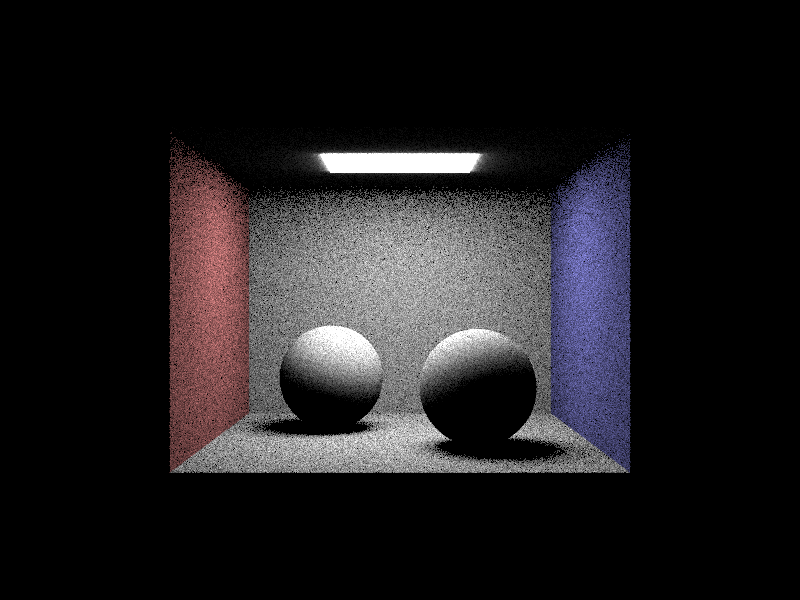
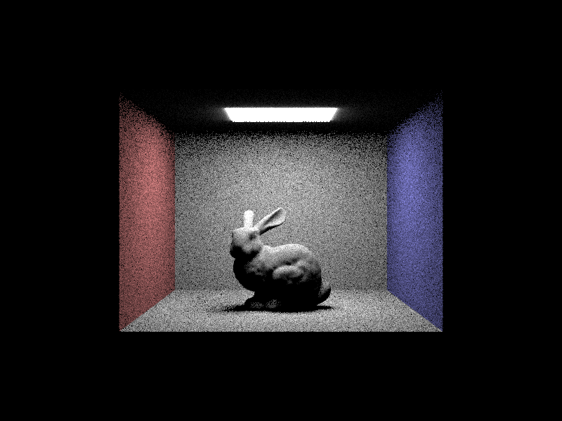
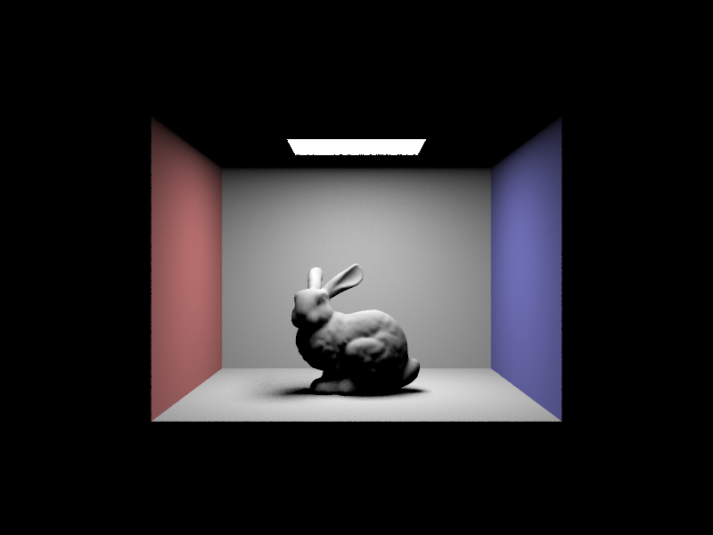
This experiment uses CBspheres_lambertian.dae, illuminated by its ceiling area light. Every image uses light importance sampling (no -H), exactly one camera sample per pixel (-s 1), 800 × 600 resolution, and 8 threads. Only -l changes. Look at the partially shadowed floor beneath and beside the spheres, where different sampled points on the area light have different visibility.
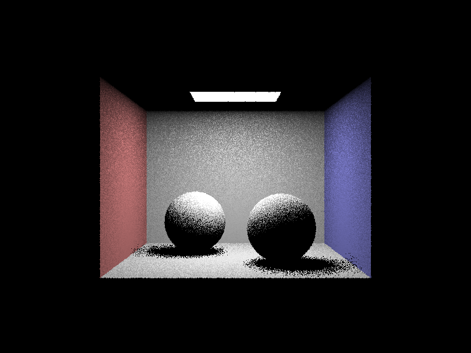
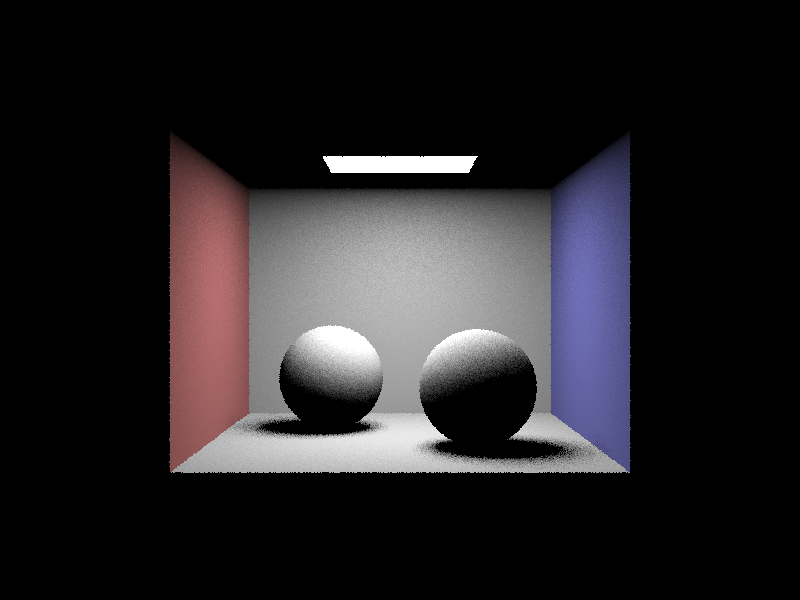
With one light sample, each pixel has only one visibility test, producing conspicuous bright and dark speckles in the soft-shadow transition. Four samples begin to average those visibility differences, but the shadow remains grainy. At 16 samples the transition is more coherent, and 64 samples produce the smoothest penumbra of the four, although some noise remains. In fully blocked regions every sample contributes zero, so increasing the sample count mainly helps the partially occluded regions. Increasing light samples does not increase camera sampling: silhouettes can still look jagged because all four images use one camera ray per pixel. The samples are random, so the visible pattern changes between runs; these are qualitative comparisons rather than measured pixel-error estimates.
At the same nominal sample counts, light importance sampling produces much cleaner illumination and more readable soft shadows than uniform hemisphere sampling in both scenes. The ceiling light occupies only a small fraction of the visible hemisphere at many surface points, so most uniform directions hit nonemissive geometry and contribute nothing; the few that find the emitter receive relatively large weights, creating bright speckles and high variance. Direct light sampling instead chooses a point on the light for every sample, using shadow rays to determine whether it is visible, which spends far more of the sampling effort on useful directions. Both estimators weight samples by the BSDF, cosine, and inverse PDF, but their variance differs substantially. For matching emitter models they estimate the same direct-light integral; in this starter framework the emissive mesh used by hemisphere sampling and the directional area-light model used by light sampling can differ near the source, so a local glow difference is not necessarily sampling noise. Neither method here includes indirect illumination, leaving surfaces without direct light dark.
Run these commands from the renderer repository root after building, then copy the generated PNGs to this write-up's assets folder:
./build/pathtracer -t 8 -s 16 -l 16 -m 1 -r 800 600 -H -f part3-CBspheres_lambertian-hemisphere.png dae/sky/CBspheres_lambertian.dae ./build/pathtracer -t 8 -s 16 -l 16 -m 1 -r 800 600 -f part3-CBspheres_lambertian-importance.png dae/sky/CBspheres_lambertian.dae ./build/pathtracer -t 8 -s 16 -l 16 -m 1 -r 800 600 -H -f part3-CBbunny-hemisphere.png dae/sky/CBbunny.dae ./build/pathtracer -t 8 -s 16 -l 16 -m 1 -r 800 600 -f part3-CBbunny-importance.png dae/sky/CBbunny.dae ./build/pathtracer -t 8 -s 1 -l 1 -m 1 -r 800 600 -f part3-shadow-1.png dae/sky/CBspheres_lambertian.dae ./build/pathtracer -t 8 -s 1 -l 4 -m 1 -r 800 600 -f part3-shadow-4.png dae/sky/CBspheres_lambertian.dae ./build/pathtracer -t 8 -s 1 -l 16 -m 1 -r 800 600 -f part3-shadow-16.png dae/sky/CBspheres_lambertian.dae ./build/pathtracer -t 8 -s 1 -l 64 -m 1 -r 800 600 -f part3-shadow-64.png dae/sky/CBspheres_lambertian.dae
code code code